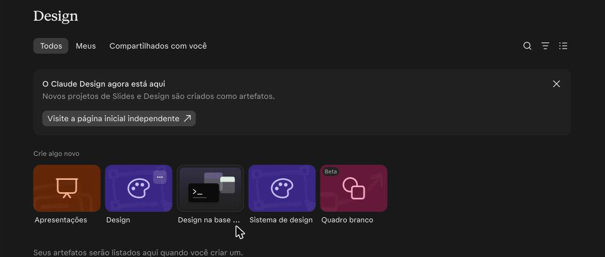
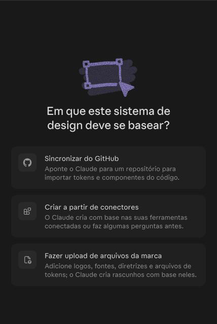
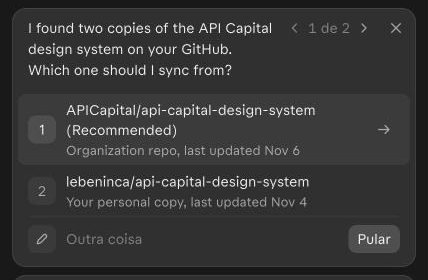
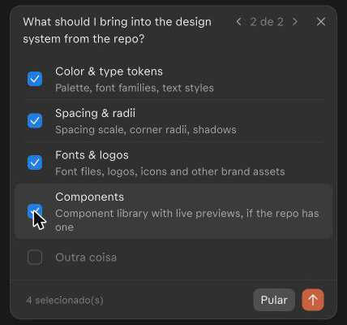
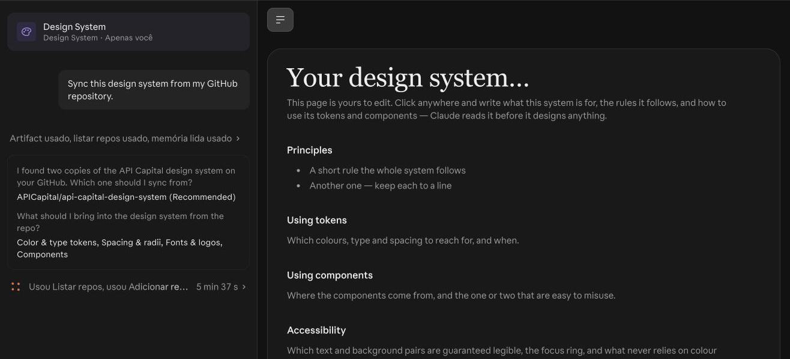
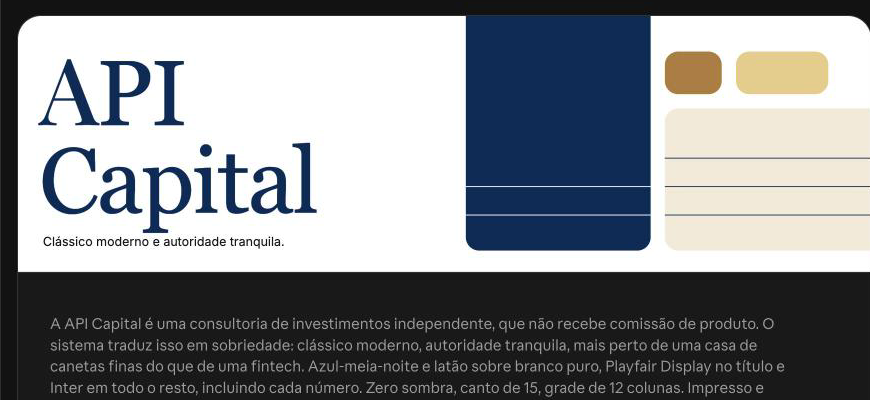
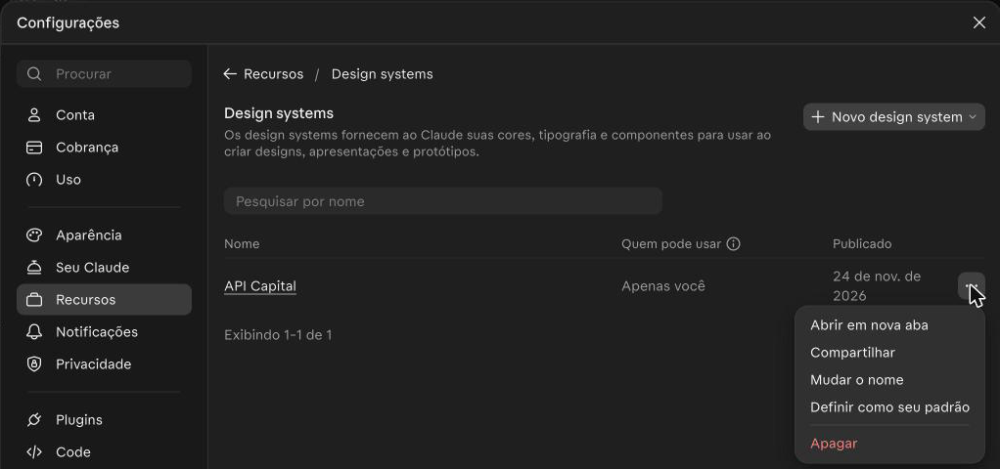
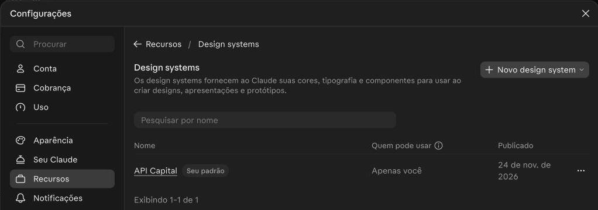

Usando Claude Design
Monte o design system da API Capital dentro do seu Claude Design, uma vez, e todo projeto novo já nasce com a marca.
Atenção: o Claude Design separado (claude.ai/design) fecha em 14 de dezembro de 2026. Daí em diante, ele mora dentro do próprio Claude, no item Design da barra lateral. Este tutorial já usa esse caminho novo: funciona hoje e continua funcionando depois do dia 14.
Montou o design system da API pelo caminho antigo, em claude.ai/design? Refaça por aqui. Os projetos que você criou lá podem ser trazidos pelo botão Mover, no aviso do alto da página Design, até o dia 14; as conversas e os comentários do site antigo não vêm junto e são apagados quando ele fechar.
Não tem o Design no seu Claude ou ficou sem limite de uso? Use o caminho Usando Claude.
1. Design, Sistema de design
No Claude, clique em Design na barra lateral. Em Crie algo novo, clique em Sistema de design.

2. Sincronizar do GitHub
O Claude pergunta em que o sistema de design deve se basear. Escolha Sincronizar do GitHub.

3. Escolha o repositório da API
Se o Claude pedir permissão para listar os seus repositórios, clique em Permitir uma vez. Na lista, escolha APICapital/api-capital-design-system.
Não aparece na lista, ou o seu Claude não tem o GitHub conectado? Clique em Outra coisa e cole o endereço abaixo. O repositório é público, e o Claude consegue ler mesmo sem conta no GitHub.

4. Marque tudo e envie
Na pergunta sobre o que trazer do repositório, marque as quatro opções: Color & type tokens, Spacing & radii, Fonts & logos e Components. Clique na seta para enviar. Se o Claude pedir para adicionar o repositório à sessão, clique em Permitir uma vez.

5. Espere a montagem
O Claude lê o repositório e monta o design system. Leva vários minutos. Deixe a aba aberta e volte depois.

6. Pronto
Quando termina, o design system API Capital abre ao lado da conversa, com a marca, as cores, as regras e os componentes lidos do repositório. No fim da conversa, o Claude lista o que trouxe e o que deixou de fora de propósito.

7. Defina como padrão
Para todo projeto novo já nascer com a marca, abra Configurações → Recursos e, em Design systems, clique em Gerenciar. No menu de três pontos ao lado de API Capital, escolha Definir como seu padrão.

Ao lado do nome aparece Seu padrão.

Montou mais de uma vez e sobrou um design system chamado só Design System, vazio? Apague pelo mesmo menu.
No dia a dia
Na página Design, em Crie algo novo, comece uma Apresentação ou um Design e peça em português: “faz um post para o Instagram com a evolução do IPCA nos últimos 5 anos”. Com o API Capital como padrão, a peça já sai com a marca.
O design system montado pelo Claude é uma leitura do repositório. Se algo sair fora da marca, a régua que vale é a deste site.
Quando sair versão nova
Diferente da skill do chat, o Design guarda uma cópia do design system. Quando aparecer versão nova em O que há de novo?, abra a conversa em que você montou o design system (ou o próprio API Capital, em Configurações → Recursos → Design systems) e peça: “sincronize de novo a partir do repositório”. O Claude atualiza só o que mudou.